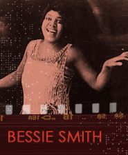
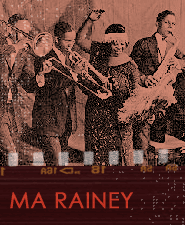

Like Bessie Smith, who recorded W.C. Handy's great "St. Louis Blues," other 1920s female stage singers working in large urban theaters in New York (on Broadway) and Chicago as a group were given the name "classic blues singers" in the following decade. Many classic blues singers were low-voiced female singers (called altos) who could project a large volume of sound to fill these big theaters, much like opera singers who performed different material.
Like songsters, classic blues singers performed a wide range of material. Many, however, featured blues-based material in their acts and used blues stylings in the way they delivered a song. Bessie Smith, Fae Barnes, Ethel Waters, Alberta Hunter, and Gertrude Saunders were all renowned classic blues singers.

Bessie Smith was the most prominent of all classic blues singers. She recorded important hits, such as "Jailhouse Blues" (1923), "Mama's Got the Blues" (1923), and "Lost Your Head Blues" (1926) among many others.
Listen to Bessie Smith's "Lost Your Head Blues" (1926).
Gertrude (Pridgett) 'Ma' Rainey, along with Bessie Smith, was one of the best of the classic blues singers. Rainey was born in Columbus, Georgia in 1886 and first heard blues sung in 1902. Unlike most classic blues singers who were born and worked in the North, she was the closest of all to an African American folk tradition.
Ma Rainey toured continually throughout the South and even into Mexico in the 1920s performing before huge audiences. By 1923, when she began to record for Paramount Records, she was already famous as a singer and would go on to make over ninety records for Paramount in just five years.
"Shave 'Em Dry" was possibly written by songster Papa Charlie Jackson with further changes by Ma Rainey. However the song was around before her Paramount recording date in 1924, so it may have been an existing folk song. The meaning of the song is not exactly clear, although the expression 'shave 'em dry' at the time referred to cutting someone's throat.
"Shave 'Em Dry" was recorded in Chicago and features Ma Rainey backed by Miles Pruitt on twelve-string guitar and another unknown guitarist. This is a classic Ma Rainey performance where she sings forcefully in an unornamented style.
The form of "Shave 'Em Dry" is 8 bar blues, which is thought to be older than the more standard 12 bar blues (and which is thought to have been developed from 8 bar blues by adding an extra 4 bars).
Listen to Ma Rainey's "Shave 'Em Dry" (1924).